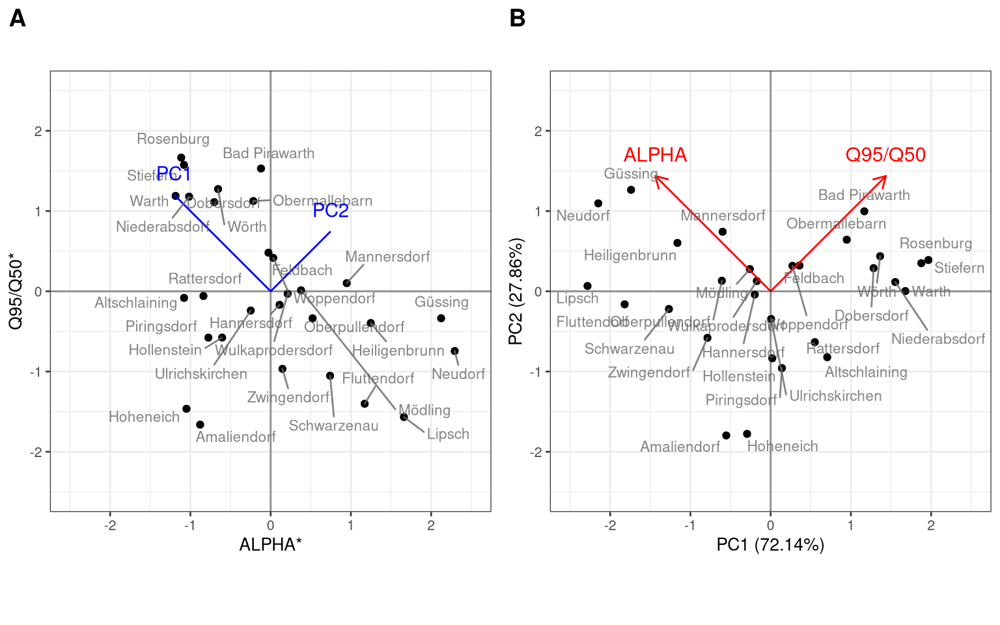
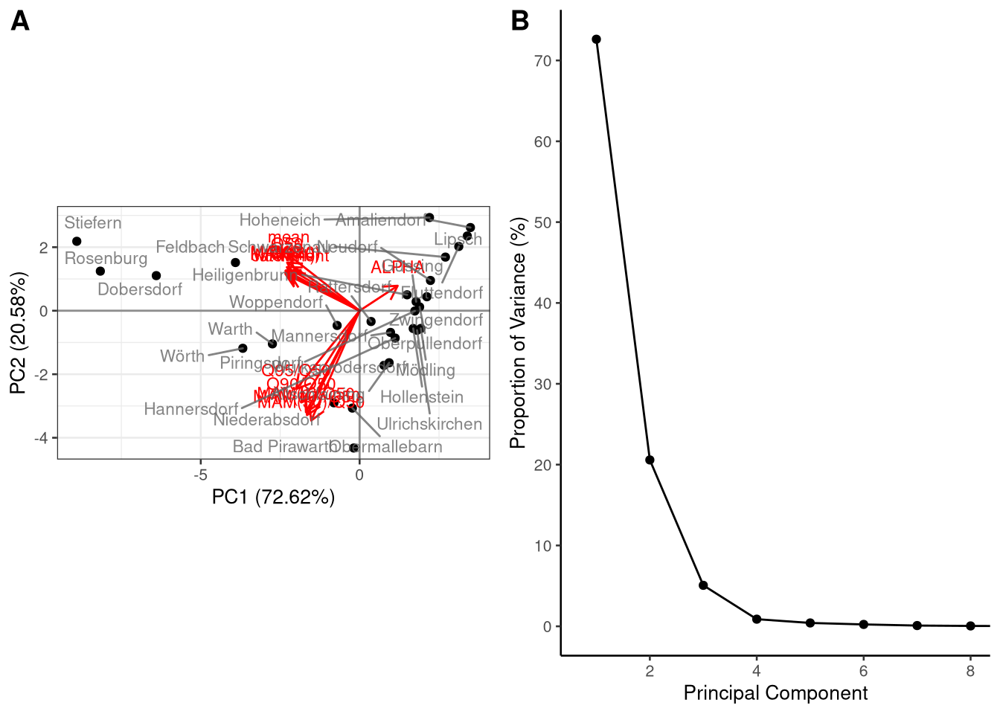

To explain what PCA is, we can first consider two low flow indices derived based on the Regional Dataset (Section 5.x): ALPHA and Q95/Q50 (Table 5.1). The values for the 21 sites are plotted in Fig. 5.16 after being standardized to have zero mean and unit standard deviation (now referred to as ALPHA* and Q95/Q50). Because ALPHA and Q95/Q50* are correlated, PC1 captures variability along a nearly 1:1 line running from the upper left to the lower right corners (Fig. 7.17a). This new axis is PC1. PC2, is added at a 90 degree angle (orthogonal), to capture the remaining variability. As we can see from Fig. 7.17a if we only have a measurement along the PC1 direction, referred to as a loading in PCA, we could reconstruct much of the ALPHA* and Q95/Q50* values. This principle is why PCA is so valuable for data reduction.
### Select only two variables
indices_matrix <- indices %>%
select(ALPHA, `Q95/Q50`) %>%
as.matrix()
rownames(indices_matrix) <- indices$id### Run the PCA analysis with scaling
regional_pca <- prcomp(indices_matrix, scale = TRUE)
# Mean (center) and standard deviation (scale) from normalization
#regional_pca$center
#regional_pca$scale
### View the PC Loading matrix
head(regional_pca$rotation)## PC1 PC2
## ALPHA 0.7071068 -0.7071068
## Q95/Q50 -0.7071068 -0.7071068### View the PC Scores
head(regional_pca$x)## PC1 PC2
## 210039 -0.1404138 0.9569836
## 210054 0.5984752 -0.7416445
## 210062 0.6078436 -0.1317603
## 210088 0.1721435 -0.1278319
## 210211 -1.2826950 -0.2886183
## 210237 -0.2715253 -0.3175126#By default, eigenvectors in R point in the negative direction. We can adjust this with a simple change.
regional_pca$rotation <- -regional_pca$rotation
regional_pca$x <- -regional_pca$xInterpreting more complex relationships can be aided by a loading plot (Fig. 7.17b), which shows that Q95/Q50* loads positively onto PC1, while ALPHA* loads negatively. So, sites like Rosenberg and Stiefern produce a high PC1 score due to high Q95/Q50* and low ALPHA, while a site like Lipsch produces a low PC1 score. PC2 captures the remaining variance not explained by PC1. For example, PC1 measures along an axis that assumes high Q95/Q50 is typically correlated with low ALPHA* and vice versa. However, Hoheneich with its simultaneously low Q95/Q50* and ALPHA* produces a PC1 near zero, but has a strongly negative PC2 score. Note the variance explained (72.14% for PC1 and 27.86% for PC2) is shown along the axes. Understanding how to read the loading figure (Fig. 7.17b) is critical for interpreting the PC scores because the loadings (and their sign) determine the meaning of the PCs.
### Plot the PC Loading
p2 <- autoplot(regional_pca,
loadings.label=TRUE, loadings=TRUE,
loadings.label.size=4, loadings.colour='red', loadings.label.vjust = -1, scale = 0) %>%
+ geom_hline(yintercept = 0, colour = "grey20", alpha = 0.5) %>%
+ geom_vline(xintercept=0, colour = "grey20", alpha = 0.5) %>%
+ geom_text_repel(vjust=-1, label=indices$station, size = 3, colour = "grey40", alpha =0.8) %>%
+ coord_fixed(ratio=1, xlim=c(-2.5,2.5), ylim=c(-2.5,2.5))Figure 7.17: Normalized variables with the PC axes (a) and the resultant PC Loading diagram (b) for these two variables.
This is a trivial example, using two PCs to represent two variables (ALPHA* and Q95/50*). PCA is most commonly used as a form of data reduction, to account for similarities between measured variables while focusing only on the most important components. To test this, we can instead run PCA on all flow indices from the Regional Dataset. This produces the loading diagram shown in Fig. 7.18a. Here we see that ALPHA loads positively onto PC1, whereas all other variables load negatively onto PC1. At sites where ALPHA is high, most other variables are low, and vice versa. Loading for PC2 further separates between the raw measures (e.g. mean, Q95) that load positively, and the relative measures (e.g. Q95/50) that load negatively. There are more PCs, but Fig. 7.18a only displays PC1 and PC2.
### Remove all the naming variables
indices_matrix <- indices %>%
select(-id, -river, -station) %>%
# select(ALPHA, `Q90/Q50`, `Q95/Q50`, `MAM(30)/Q50`, `MAM(10)/Q50`,`MAM(1)/Q50`) %>%
as.matrix()
rownames(indices_matrix) <- indices$id
### Run the PCA analysis with scaling
regional_pca <- prcomp(indices_matrix, scale = TRUE)
#Adjust the sign of Eigen vectors.
regional_pca$rotation <- -regional_pca$rotation
regional_pca$x <- -regional_pca$x
### Create loading plot
p1 <- autoplot(regional_pca,
loadings.label=TRUE, loadings=TRUE,
loadings.label.size=3, loadings.colour='red', loadings.label.vjust = -1, scale = 0) %>%
+ geom_hline(yintercept = 0, colour = "grey20", alpha = 0.5) %>%
+ geom_vline(xintercept=0, colour = "grey20", alpha = 0.5) %>%
#+ geom_text_repel(vjust=-1, label=indices$station, size = 3, colour = "grey40", alpha =0.8) %>%
+ coord_fixed(ratio=1)As a form of data reduction, usually only the most important PCs are studied. There are several ways of deciding how many PCs to include. One method is to look at the scree plot, which graphs the proportion of variance explained (also called the eigenvalues) and only retain the components above the scree plot ‘elbow’. In Fig. 7.18b this is either at PC2 or PC3. We know that we can capture 93.2% of the total variance in the regional flow indices using only two scores, PC1 and PC2, and that these two measures are theoretically independent of one another (they should not be correlated). The user can use their knowledge of the system to determine whether PC3, which only explains 5% of the total variance, has a useful meaning or can be considered noise.
### Extract the PC eigen values and variance explained
pc.importance <- summary (regional_pca)
### Create scree plot data
scree_plot <- data.frame(cbind(Component=seq(1,dim(pc.importance$importance)[2]),t(pc.importance$importance)))
scree_plot$EigenVal <- scree_plot$Standard.deviation^2
scree_plot[1:5,]## Component Standard.deviation Proportion.of.Variance Cumulative.Proportion EigenVal
## PC1 1 3.3005444 0.72624 0.72624 10.89359347
## PC2 2 1.7570323 0.20581 0.93205 3.08716252
## PC3 3 0.8720938 0.05070 0.98275 0.76054757
## PC4 4 0.3639048 0.00883 0.99158 0.13242668
## PC5 5 0.2496006 0.00415 0.99574 0.06230047### Create scree plot using proportion of variance explained
p2 <- ggplot(scree_plot, aes(Component,Proportion.of.Variance*100)) %>%
+ geom_line() %>%
+ geom_point() %>%
+ scale_x_continuous(name = "Principal Component", breaks=seq(0,30,2)) %>%
+ scale_y_continuous(name = "Proportion of Variance (%)", breaks=seq(0,100, 10)) %>%
+ theme_classic(10) %>%
+ coord_fixed(ratio = 0.1, xlim=c(0.7,8))Figure 7.18: PC Loading diagram for all low flow metrics (a) and the resultant scree plot (b).
